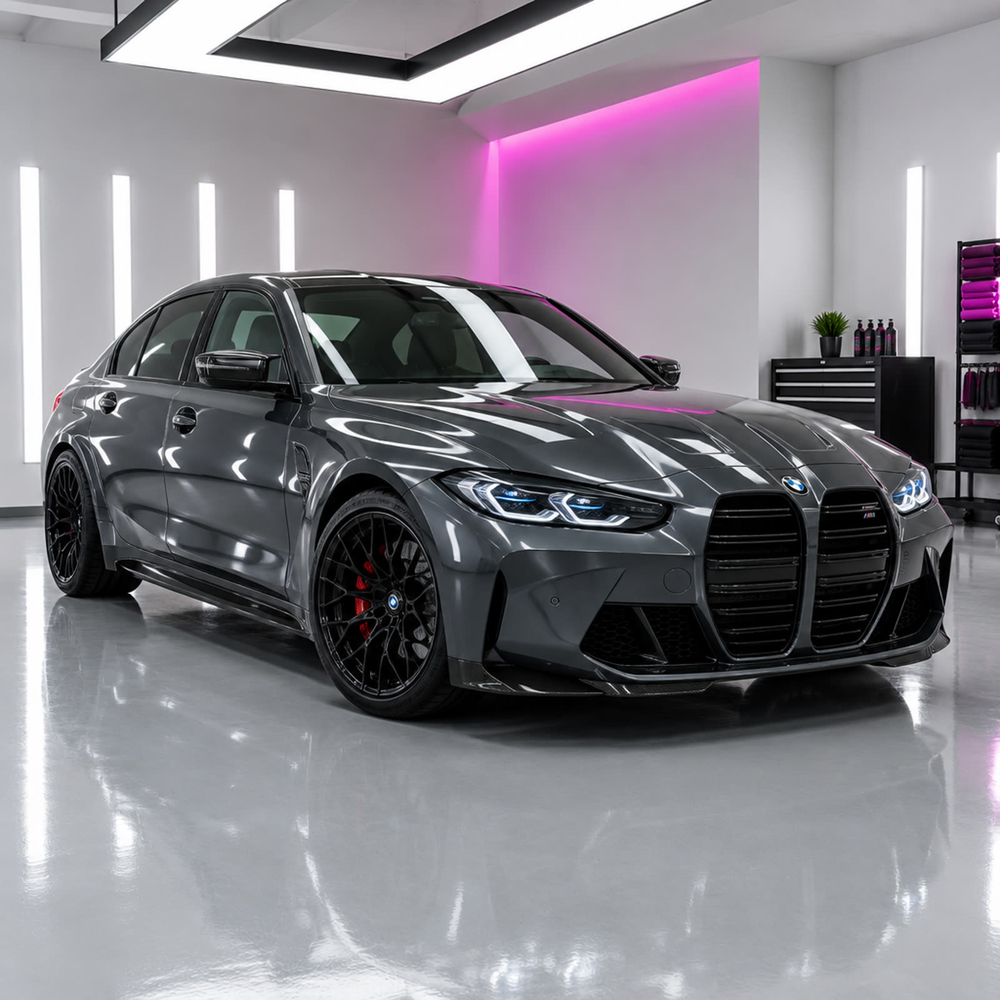
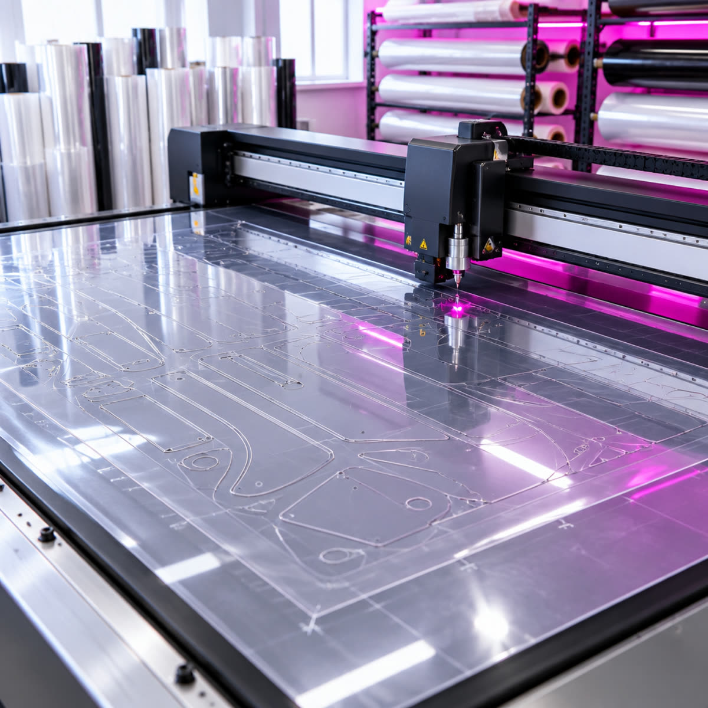

Плёнка кроится на плоттере, а не ножом по кузову
Оклейка защитной антигравийной плёнкой по лекалам с плоттерной резкой: капот, бамперы, крылья, пороги, зоны риска и полная оклейка кузова. Подгонка под модель без лишних подрезок и зазоров.

Заводской вид сохраняется, сколы остаются в плёнке
PPF — прозрачный полиуретан. Он принимает удар на себя: камень гасится в эластичном слое, а лак под ним остаётся целым. Мелкие риски на самой плёнке затягиваются от тепла.
Защита от сколов и гравия
Капот, бампер и кромки — первые, кто получает камни на трассе. Плёнка держит удар вместо лака.
Блеск без потери цвета
Прозрачный полиуретан не меняет оттенок, а глянцевый вариант добавляет глубины.
Стойкость к реагентам и ультрафиолету
Зимняя химия и солнце работают по плёнке, а не по лаку.
Защита при продаже
Целое ЛКП под плёнкой — аргумент, который видно при осмотре.
Можно по зонам, можно весь кузов
Начните с зон риска — это самая частая оклейка. Полная оклейка закрывает весь кузов по лекалам.
Главная зона: гравий, камни от фур, сколы на кромке.
Парковка, бордюры, мелкие контакты и удары щебня.
Вылет камней из-под колёс, особенно на широких шинах.
Песок и гравий по низу кузова, контакты с обувью.
Кромки дверей, зеркала, зона погрузки, фары.
Весь кузов по лекалам — единый защитный слой.

Лекало вместо ножа по кузову
Плёнка режется на плоттере по готовому лекалу конкретной модели. Мастер не ведёт ножом по вашему лаку — он снимает готовый контур и укладывает его.
- Лекало под марку, модель и год
- Ровные кромки без подрезок на кузове
- Плёнка с запасом на подворот, а не «на глаз»
- Монтаж с мойкой, обезжириванием и контролем кромок
Четыре шага
Сначала расчёт по вашей модели, потом работа.
Расчёт
Марка, модель, зоны. Называем стоимость до начала работ.
Подготовка
Мойка, обезжиривание, проверка ЛКП на дефекты.
Лекало и монтаж
Резка на плоттере, укладка с водой, выгонка пузырей.
Контроль
Осмотр кромок, сушка, инструкция по уходу.
Работаем с любыми марками и моделями
Коротко о главном
Если ответа нет — позвоните, объясним под вашу модель.
Плёнка точно не испортит лак?
Работаем по лекалам: нож по кузову не идёт. Плёнка клеится на подготовленную поверхность, снимается без следов при правильном демонтаже.
Сколько держится?
Зависит от материала и условий эксплуатации. На встрече показываем, какой плёнкой работаем, и объясняем разницу по срокам.
Можно мыть на автомойке?
Да, после полной полимеризации. Дальше даём инструкцию по уходу: чем можно, чем не стоит и почему.
Мелкие царапины на плёнке затягиваются?
Да, у полиуретана есть эффект самовосстановления от тепла. Это и показано в блоке с камнями выше.
Кроме плёнки что делаете?
Шумоизоляцию, тонировку, бронирование стёкол и автовинил — подробности на странице «Другие работы».
Рассчитаем по вашей модели
Скажите марку, модель и зоны — назовём стоимость и сроки.
Борисов, Минская область · 72 км до Минска